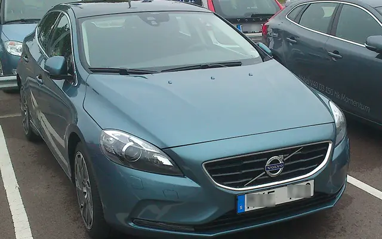

Par Motor › Precios por modelo › Volvo V40
Precio de segunda mano · noviembre de 2026¿Cuánto vale un Volvo V40 de segunda mano?

Precio justo estimado de un Volvo V40 usado en España, año por año, con los kilómetros normales para su edad y en buen estado: de 9.400 € a 14.200 €. Para tasar el tuyo con sus kilómetros reales y su estado, usa el tasador gratis.
Precios del Volvo V40 por año
V40 (2012) (2012–2019)
Precio de nuevo: T2 1.5 122 CV, 25.000 € · D2 1.6 115 CV, 26.000 € · T3 1.5 152 CV, 27.500 €
| Año | Km normales | T2 1.5 122 CV · Gasolina | D2 1.6 115 CV · Diésel | T3 1.5 152 CV · Gasolina |
|---|---|---|---|---|
| 2019 | 100.000 km | 12.600 € | 14.200 € | 13.800 € |
| 2018 | 100.000 km | 12.300 € | 14.000 € | 13.500 € |
| 2017 | 100.000 km | 11.900 € | 13.700 € | 13.100 € |
| 2016 | 100.000 km | 11.600 € | 12.800 € | 12.700 € |
| 2015 | 100.000 km | 11.200 € | 11.900 € | 12.300 € |
| 2014 | 100.000 km | 10.800 € | 11.000 € | 11.900 € |
| 2013 | 100.000 km | 10.200 € | 10.200 € | 11.200 € |
| 2012 | 100.000 km | 9.400 € | 9.500 € | 10.400 € |
Kilómetros normales: 15.000 al año en gasolina, híbridos y eléctricos, y 20.000 en diésel, con un máximo de 100.000 km (por encima no tasamos: el precio depende demasiado del historial de cada coche). Cifras redondeadas a 100 €.
Preguntas frecuentes
¿Cuánto vale un Volvo V40 de segunda mano?
Según el año, la versión y los kilómetros, un Volvo V40 usado vale hoy de 9.400 € a 14.200 € en España. El más barato de nuestra tabla es un T2 1.5 de 2012 (9.400 €) y el más caro un D2 1.6 de 2019 (14.200 €). Son precios justos estimados entre particulares y profesionales, con los kilómetros normales para su edad y en buen estado.
¿Cuánto valor pierde un Volvo V40 al año?
Con unos años encima, un Volvo V40 pierde alrededor de un 3 % de su valor cada año (calculado sobre el T2 1.5 de la generación V40 (2012)). Los primeros años la caída es mayor y a partir de los 70.000 km se acelera.
¿Qué motorizaciones tiene el Volvo V40?
En nuestra base de datos hay versiones gasolina y diésel, en 1 generación: V40 (2012).
¿Cómo sé si me piden demasiado por un Volvo V40?
Abre el tasador de Par Motor, elige el Volvo V40, el año y los kilómetros reales, y escribe lo que te piden. Te diremos si está por debajo del precio justo (chollo) o por encima (caro). Es gratis y no pide registro ni matrícula.
Otros Volvo
Compara su coste real
El precio de compra es solo una parte. Mira cuánto te costaría al mes con combustible, seguro, neumáticos, mantenimiento y lo que pierde de valor.
Abrir el comparador →